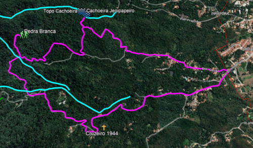
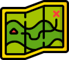

Serra de Maranguape A Serra de Maranguape compõe parte do limite natural entre os municípios de maranguape e Caucaia e sua individualização é um problema para a literatura geomorfológica, existindo poucas referências sobre o processo pelo qual ocorreu o isolamento das serras da Aratanha e Maranguape. A serra é um relevo residual pré-litorâneo, com cerca de 15 km de distânciada capital, apresentando morfologia bastante dissecada. A estabilidade é conseguida graças à cobertura arbórea, surgida pelos altos níveis de precipitação que ocorre nesses dois relevos.Existe um corte abrupto da elevação, contrapondo com a superfície do chamado piso, estabelecendo declividades superioresa 25º no setor ESSE da serra de Maranguape. A Serra de Maranguapetem é vista em seu conjunto como uma crista longitudinal, bem caracterizada nos modelos de elevação do terreno, alcançando altitude de pouco mais de 900m, onde temos o monumento natural da Pedra da rajada. Breve histórico As serras úmidas do Ceará possuem condições bastante favoráveis à exploração agrícola. Isto porque apresentam características de: solo bem mais fértil, maior oferta de água, menores temperaturas e preservação do solo por conta de densa cobertura vegetal. A história da ocupação do Ceará por portugueses e por holandeses passa por capítulos de busca por metais preciosos no territótio onde hoje se localiza o monte Itarema (Serra da Aratanha). Mas as ações de ocupação da região só vieram se estabelecer a partir do século XVIII, com a concessão de sesmarias. A Serra de Maranguape está dividida entre três municípios: Maranguape, Maracanaú e Caucaia. E a maior densidade de ocupação se deu no vale de sua vertente oriental. De início houve forte expansão da produção cafeeira e de forma menos intensa, a paordução de laranjas. Esse movimento de produção de café no final do século XIX, temos a efetiva ocupação nas serras úmidas do NOrdeste. Isto porque, com condições mais favoráveis (emperatura amena e alta pluviometria) a eficiência da produção justificava os custos de manejo. Foi um período de polarização entre a produção pecuária no sertão e produção de café nas serras. E isso fez com que o dínamo da imigração girasse intensamente pela primeira vez. Os embriões de novas cidades começaram a se fortalecer, principalmente no entorno do maciço. E as cidades já existente, como maranguape, ganharam impulso de desenvolvimento. A produção de café foi tão proeminente que houve fluxo de exportação para Europa, a partir do Mucuripe. Fortaleza, Baturité e Maranguape ganhavam poderia político e econômico. Podemos delimitar o ciclo do café em maranguape como sendo de 1862 à meados da década de 1920. Foi o período de significativos avanços urbanos. Desde a construção da Igreja Matriz ao surgimento do casario do centro histórico. Até mesmo a vaguarda da chegada de iluminação pública e luz elétrica. Com a crise mundial de 1929, a produção de café brasileira é atingida em cheio e o declínio da produção afeta muito centros produtivos. Em maranguape não foi diferente. A produção cai substancialmente e a pequena elite se vê interessada em novos investimentos, sobretudo produção leiteira e algodão. Mas isso no ambiente do sertão. O poderio do café se torna o poderio do algodão. E maranguape passa a ser um dos principais centros prodtories da fibra, no Ceará. Já na década de 1940, o interesse agrícola se volta novamente para a Serra de Maranguape, com especial atenção na produção de bananas. E junto a este movimento de produção, a beleza natural do lugar, oferta de água e proximidade de Fortaleza, tornou maranguape um centro turístico e de veraneio. Netse período começam a surgir exuberantes sítios e a relação com posseiros e moradores começa a mudar gradual e lentamente. Antigos sítios são remodelados para lugares de veraneio e os mais ricos exibem o status de possuir casa na serra de Maranguape. E um dos símbolos dessa apropriação da elite foi o surgimento do Balneário Pirapora Palace. Foi o crescimento do turismo endógeno. A alta exploração do espaço da serra foi sentido em forma de uma grande tragédia ocorrida em 29 de abril de 1974. Na tarde daquele dia, uma grande porção da vertente oriental da serra desmoronou, gerando um efeito dominó de deslizamento e desabamentos das encostas Foi período em que na Serra de Maranguape houve forte apelo ao extrativismo vegetal e os ciclos de produção de laranjas, café e banana. O ramal da linha de trem Fortaleza-Baturité, que vinha até Maranguape, ajudava no escoamento da produção e incentivava a gradual substituição da mata nativa pelos bananais. A agricultura na Serra de Maranguape prosperou fortemente até meados da década de 1970, quando um gigantesco deslizamento de terra na serra, acabou por provocar a perda irreparável de mais de uma dezena de pessoas. Além dos enormes danos ambientais, a imagem da serra como um lugar para descanso foi abalada. A bananicultura entrou em forte declínio e a serra enquanto local turístico iniciou o processo de abandono de sítios e balneários. Circuito Pedra Branca  Trilha Pedra Branca Tomemos como exemplo a trilha-circuito para a Pedra Branca: A pedra Branca é um afloramento de rocha, posicionada em uma altitude de 565m (em relação ao nível do mar). É um mirante natural na Serra de Maranguape e fica numa das regiões onde houve grande movimentação de terra, no deslizamento de 1974. Os acessos principais ao mirante da pedra Branca podem ser tanto pela subida da estrada do Gavião quanto pela estrada Thomaz Pompeo, ambas iniciam na Rua Benedito Prata (Guabiraba). Essa trilha acaba sendo um circuito porque é possível subir por uma das estradas e descer por outra. Existe um pequeno trecho em comum entre as duas trilhas já quase na chega ao mirante. Assim, podemos considerar um circuito, que passa ater 7,6km de comprimento e impacto de nível médio-leve. Durante o percurso os viajantes vão se deparar com grandes áreas com plantações de bananas, mas também poderão ver árvores centenárais, porções de mata nativa e muitos animais ao longo do cainho. Em todas as trilhas da serra temos que cruzar pequenos córregos e drenagens, atravessar tipos de solo diferentes e exeprimentar variações de temperatura, mesmo nos meses mais quentes. Toda essa dinâmica, no espaço natural da serra, possibilita campo para aulas de diversas ciências além de laboratório de pesquisa para um sem número de possibilidades. Apoiar à pesquisa na serra é garantir Maranguape no mapa científico e social. É aproveitar o potencial do turismo científico, é resignificar o espaço natural com responsabilidade e segurança. É também incentivar que as pessoas conheçam e preservem nossos patrimônios naturais. Etapas do Projeto  Principais trilhas da Serra de Maranguape mapeadas; Classificação destas trilhas por impacto físico; Disponibilização dos mapas das trilhas (versões em .kml e .kmz).ver Mapeamento da oferta de produtos e serviços pelos moradores da serra.
Serra de Maranguape A Serra de Maranguape compõe parte do limite natural entre os municípios de maranguape e Caucaia e sua individualização é um problema para a literatura geomorfológica, existindo poucas referências sobre o processo pelo qual ocorreu o isolamento das serras da Aratanha e Maranguape. A serra é um relevo residual pré-litorâneo, com cerca de 15 km de distânciada capital, apresentando morfologia bastante dissecada. A estabilidade é conseguida graças à cobertura arbórea, surgida pelos altos níveis de precipitação que ocorre nesses dois relevos.Existe um corte abrupto da elevação, contrapondo com a superfície do chamado piso, estabelecendo declividades superioresa 25º no setor ESSE da serra de Maranguape. A Serra de Maranguapetem é vista em seu conjunto como uma crista longitudinal, bem caracterizada nos modelos de elevação do terreno, alcançando altitude de pouco mais de 900m, onde temos o monumento natural da Pedra da rajada. Breve histórico As serras úmidas do Ceará possuem condições bastante favoráveis à exploração agrícola. Isto porque apresentam características de: solo bem mais fértil, maior oferta de água, menores temperaturas e preservação do solo por conta de densa cobertura vegetal. A história da ocupação do Ceará por portugueses e por holandeses passa por capítulos de busca por metais preciosos no territótio onde hoje se localiza o monte Itarema (Serra da Aratanha). Mas as ações de ocupação da região só vieram se estabelecer a partir do século XVIII, com a concessão de sesmarias. A Serra de Maranguape está dividida entre três municípios: Maranguape, Maracanaú e Caucaia. E a maior densidade de ocupação se deu no vale de sua vertente oriental. De início houve forte expansão da produção cafeeira e de forma menos intensa, a paordução de laranjas. Esse movimento de produção de café no final do século XIX, temos a efetiva ocupação nas serras úmidas do NOrdeste. Isto porque, com condições mais favoráveis (emperatura amena e alta pluviometria) a eficiência da produção justificava os custos de manejo. Foi um período de polarização entre a produção pecuária no sertão e produção de café nas serras. E isso fez com que o dínamo da imigração girasse intensamente pela primeira vez. Os embriões de novas cidades começaram a se fortalecer, principalmente no entorno do maciço. E as cidades já existente, como maranguape, ganharam impulso de desenvolvimento. A produção de café foi tão proeminente que houve fluxo de exportação para Europa, a partir do Mucuripe. Fortaleza, Baturité e Maranguape ganhavam poderia político e econômico. Podemos delimitar o ciclo do café em maranguape como sendo de 1862 à meados da década de 1920. Foi o período de significativos avanços urbanos. Desde a construção da Igreja Matriz ao surgimento do casario do centro histórico. Até mesmo a vaguarda da chegada de iluminação pública e luz elétrica. Com a crise mundial de 1929, a produção de café brasileira é atingida em cheio e o declínio da produção afeta muito centros produtivos. Em maranguape não foi diferente. A produção cai substancialmente e a pequena elite se vê interessada em novos investimentos, sobretudo produção leiteira e algodão. Mas isso no ambiente do sertão. O poderio do café se torna o poderio do algodão. E maranguape passa a ser um dos principais centros prodtories da fibra, no Ceará. Já na década de 1940, o interesse agrícola se volta novamente para a Serra de Maranguape, com especial atenção na produção de bananas. E junto a este movimento de produção, a beleza natural do lugar, oferta de água e proximidade de Fortaleza, tornou maranguape um centro turístico e de veraneio. Netse período começam a surgir exuberantes sítios e a relação com posseiros e moradores começa a mudar gradual e lentamente. Antigos sítios são remodelados para lugares de veraneio e os mais ricos exibem o status de possuir casa na serra de Maranguape. E um dos símbolos dessa apropriação da elite foi o surgimento do Balneário Pirapora Palace. Foi o crescimento do turismo endógeno. A alta exploração do espaço da serra foi sentido em forma de uma grande tragédia ocorrida em 29 de abril de 1974. Na tarde daquele dia, uma grande porção da vertente oriental da serra desmoronou, gerando um efeito dominó de deslizamento e desabamentos das encostas Foi período em que na Serra de Maranguape houve forte apelo ao extrativismo vegetal e os ciclos de produção de laranjas, café e banana. O ramal da linha de trem Fortaleza-Baturité, que vinha até Maranguape, ajudava no escoamento da produção e incentivava a gradual substituição da mata nativa pelos bananais. A agricultura na Serra de Maranguape prosperou fortemente até meados da década de 1970, quando um gigantesco deslizamento de terra na serra, acabou por provocar a perda irreparável de mais de uma dezena de pessoas. Além dos enormes danos ambientais, a imagem da serra como um lugar para descanso foi abalada. A bananicultura entrou em forte declínio e a serra enquanto local turístico iniciou o processo de abandono de sítios e balneários. Circuito Pedra Branca Trilha Pedra Branca Tomemos como exemplo a trilha-circuito para a Pedra Branca: A pedra Branca é um afloramento de rocha, posicionada em uma altitude de 565m (em relação ao nível do mar). É um mirante natural na Serra de Maranguape e fica numa das regiões onde houve grande movimentação de terra, no deslizamento de 1974. Os acessos principais ao mirante da pedra Branca podem ser tanto pela subida da estrada do Gavião quanto pela estrada Thomaz Pompeo, ambas iniciam na Rua Benedito Prata (Guabiraba). Essa trilha acaba sendo um circuito porque é possível subir por uma das estradas e descer por outra. Existe um pequeno trecho em comum entre as duas trilhas já quase na chega ao mirante. Assim, podemos considerar um circuito, que passa ater 7,6km de comprimento e impacto de nível médio-leve. Durante o percurso os viajantes vão se deparar com grandes áreas com plantações de bananas, mas também poderão ver árvores centenárais, porções de mata nativa e muitos animais ao longo do cainho. Em todas as trilhas da serra temos que cruzar pequenos córregos e drenagens, atravessar tipos de solo diferentes e exeprimentar variações de temperatura, mesmo nos meses mais quentes. Toda essa dinâmica, no espaço natural da serra, possibilita campo para aulas de diversas ciências além de laboratório de pesquisa para um sem número de possibilidades. Apoiar à pesquisa na serra é garantir Maranguape no mapa científico e social. É aproveitar o potencial do turismo científico, é resignificar o espaço natural com responsabilidade e segurança. É também incentivar que as pessoas conheçam e preservem nossos patrimônios naturais. Etapas do Projeto Principais trilhas da Serra de Maranguape mapeadas; Classificação destas trilhas por impacto físico; Disponibilização dos mapas das trilhas (versões em .kml e .kmz).ver Mapeamento da oferta de produtos e serviços pelos moradores da serra.